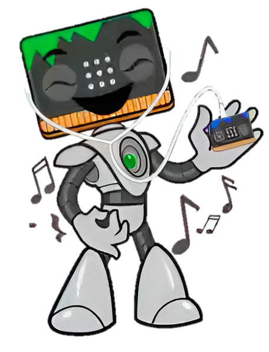
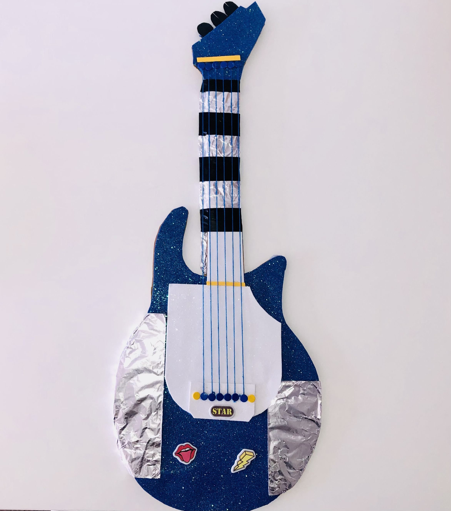
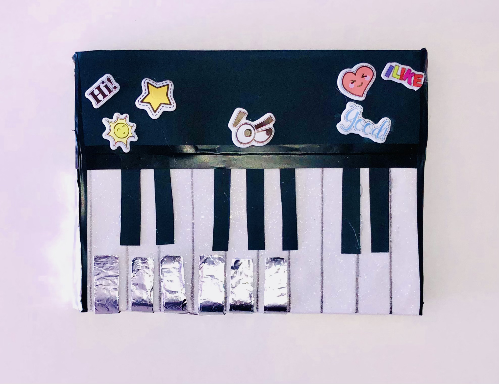
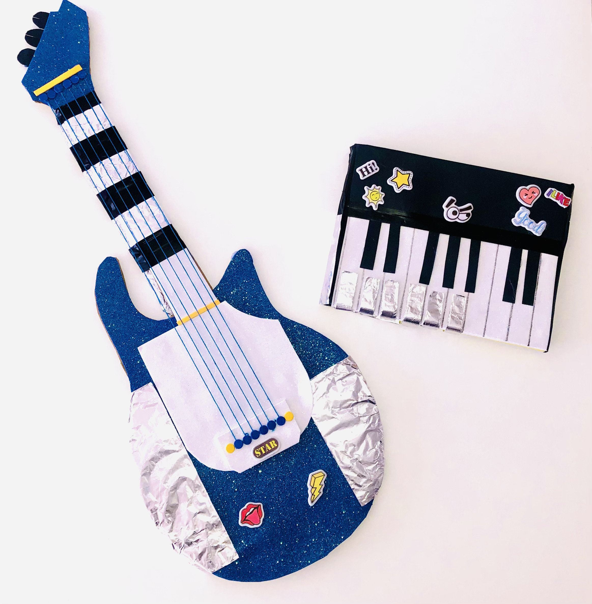

1. ¡Crea tu instrumento!

.
Ha llegado el momento de que pongas en práctica todo lo que has aprendido.
Para poder hacerlo, crea una guitarra o un piano que puedas codificar en Makecode.
Si se te ocurre otro instrumento, también podrás realizarlo.
Trabaja con otro/a compañero/a o en grupos de tres.
Ten en cuenta las siguiente recomendaciones.
.
Paso 1: Recaba todos los materiales
Para realizar este proyecto, necesitarás lo siguientes materiales.
Acuerda con tu compañero/a qué materiales traeréis cada uno.

También puedes utilizar otros más para decorar tus instrumentos.
Paso 2: Programa tu micro:bit en Makecode
Codifica tu placa micro:bit en Makecode para que tu instrumento suene:
- Escribe tres instrucciones para que al pulsar cada uno de los pines P0, P1 y P2, se escuche medio todo (1/2) de notas musicales diferentes.
- Si lo deseas, puedes hacer que por cada pin suenen dos tonos. Por ejemplo, al pulsar el pin P02, el sonido DO 1/4 de tono, y el sonido RE 1/4 de todos.
- Si no te acuerdas de cómo hacerlo, recuerda que la actividad "RETO 2: Botones de emociones" hicimos algo muy parecido.
Paso 3: Crea tu instrumento
Cuando ya tengas decidido tu instrumento, una guitarra o un piano, ponte manos a la obra.
En primer lugar, dibuja el instrumento sobre un trozo de cartón grande.

En segundo lugar, recorta el instrumento.

A continuación, decora el instrumento como más te guste. ¡Sé todo lo creativo que puedas! Puedes utilizar pinturas, goma EVA, pegatinas, lana, etc.

Por último, enchufa todos los cables desde tu micro:bit a la guitarra.

Inspírate en estos ejemplos
 
